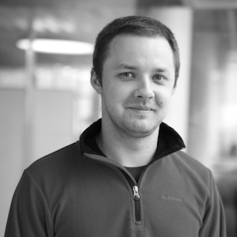

Cocoa Heads
Встречи разработчиков для iOS и OS X в Москве
На встречах CocoaHeads можно представить доклад, рассказать о своем проекте, поделиться опытом и просто пообщаться с единомышленниками. Совсем не обязательно быть гуру, можно просто прийти и послушать, что думают товарищи, задать наболевшие вопросы.
Встречи проходят в офисе Mail.Ru по адресу Ленинградский проспект, д. 39, стр. 79, БЦ «SkyLight». Две большие стеклянные башни около метро Аэропорт. Пожалуйста, берите с собой паспорт. Конечно, можно прийти и без регистрации, это же Москва. Но так организаторам трудно будет рассчитать количество визиток, стульев и пиццы.
Подписывайтесь на наш твиттер @CocoaHeadsMsk.
Видеотрансляция
Встреча №9, 29 ноября 2013 Событие на TimePad
Антон Буков, Meetweet
«Алгоритмы и коллекции стандартных библиотек C++, C#, Java, Objective-C» Слайды
Денис Лебедев, Wargaming
«Будущее паттерна MVVM в iOS приложениях» Слайды
Данил Пархоменко, Ambient foley room
«AudioBus: Эволюция звука» Слайды
Встреча №8, 25 октября 2013 Событие на TimePad
Андрей Гусев, NeoSphere
«NSIncrementalStore, или как заставить Core Data варить ваш собственный кофе» Слайды
Михаил Кольцов, РБК
«RESTful клиент — это просто. Тонкости использования RestKit» Слайды
Михаил Вайсман, Redmadrobot
«NSThread и NSOperation на практике» Слайды
Ксения Покровская, Parallels
«Использование возможностей iOS 7 SDK» Слайды
Встреча №7, 31 мая 2013 Событие на TimePad
Стас Потемкин, Mail.Ru
«Использование Accelerate для ускорения сложных вычислений»
Глеб Тарасов, независимый разработчик
«Делаем жизнь проще с CocoaPods»
Ксения Покровская, Parallels
«iOS App Performance: Responsiveness»
Встреча №6, 12 апреля 2013 Событие на TimePad
Ксения Покровская, Parallels
«Building concurrent user interfaces»
Никита Пестров, easy ten
«Core Data Migration»
Встреча №5, 1 марта 2013 Событие на TimePad
Ксения Покровская, Parallels
«Сrashreporting на iOS»

Евгений Беляев, Mail.Ru
«Взаимодействие между дизайнерами и разработчиками»
Слайды
Александр Киров, Mail.Ru
«Можно ли сделать дизайн без дизайнера?»
Слайды
Константин Платов, Mail.Ru
«Звук и ресурсы iOS в realtime»
Слайды
Встреча №4, 30 ноября 2012 Событие на TimePad
Александр Перепелицын, Mail.Ru
«Построение игровых интерфейсов: избавляемся от ручной работы»
Данил Пархоменко, Ambient foley room
«Как не сломать шею на Core Audio»
Встреча №3, 26 октября 2012 Событие на TimePad
Алексей Поимцев, Progress Engine
«Разработка Web — Наблюдателя»
Андрей Останин
«Continuous Integration. Что? Зачем? Как?»
Встреча №2, 28 сентября 2012 Событие на TimePad Видео

Александр Черный, Mail.Ru «Быстрое выделение памяти под множество однотипных объектов» Слайды
Ксения Покровская, Parallels
«Доставка iOS приложений на тестовые устройства»
Александр Перепелицын, Mail.Ru
«Objective-C Runtime»
Встреча №1, 31 августа 2012 Событие на TimePad Видео
Никита Пестров, easy ten
«Core Animation»
Дмитрий Обухов
«Разработка кастомных контролов под Mac OS X»